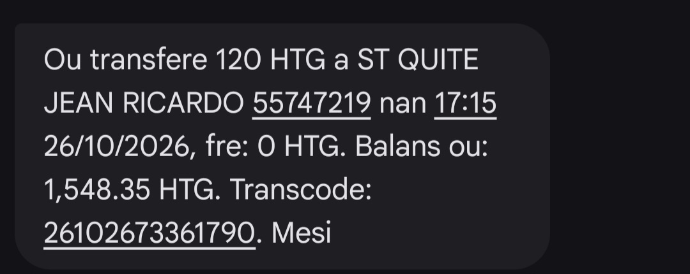

only ap swiv kou nan men fedlin responsab programasyon kou html ak css

only ap swiv kou nan men fedlin responsab programasyon kou html ak css
la litterature represente l'ensembles des oeuvres
ecrites qui utilisent la beaute de la langue pour s'exprimer